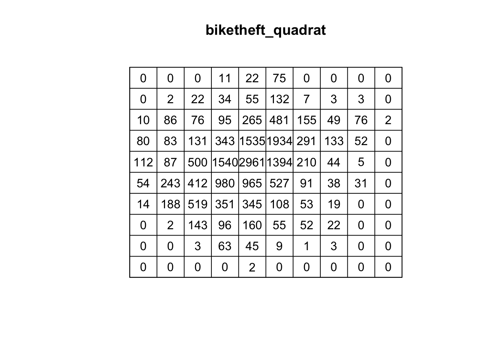
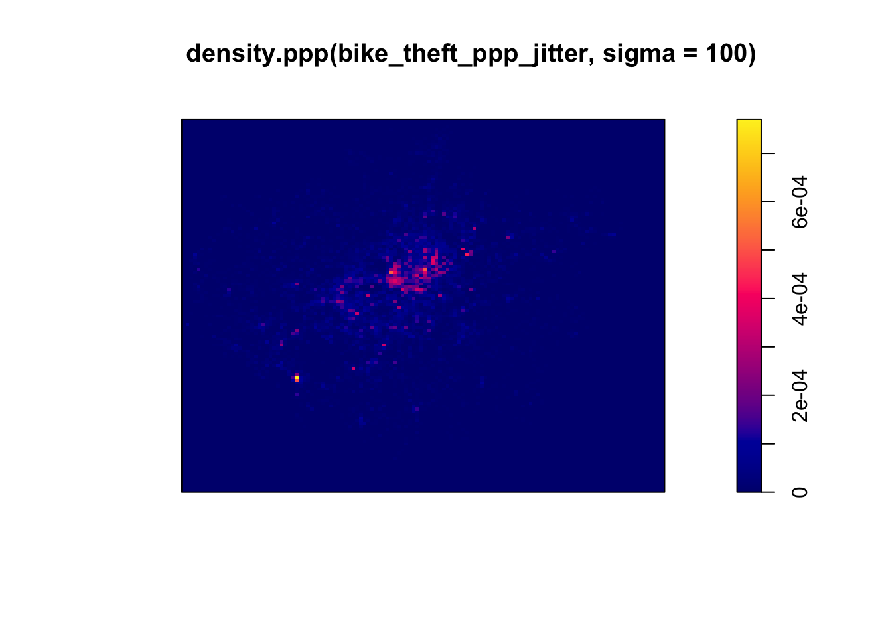
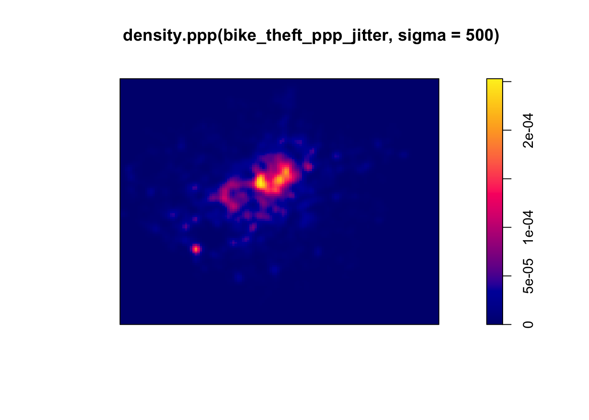
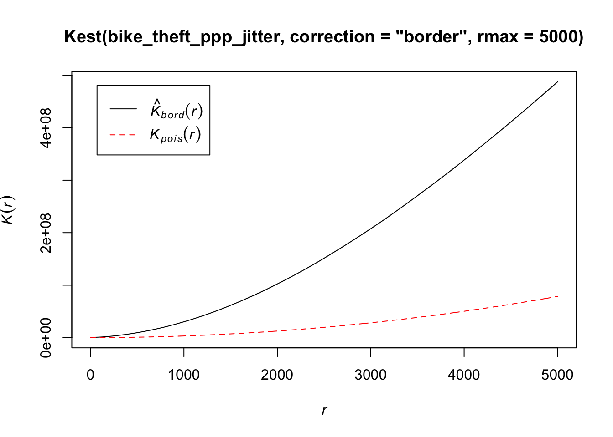

8 Analysing Spatial Patterns III: Point Pattern Analysis
Welcome to Week 8 in Geocomputation!
This week, we’ll be looking at how we can use Point Pattern Analysis (PPA) to detect and delineate clusters within point data.
Within point pattern analysis, we look to detect clusters or patterns across a set of points, including measuring density, dispersion and homogeneity in our point structures.
There are several approaches to calculating and detecting these clusters, which are explained in our main lecture. We then deploy several PPA techniques, including Kernel Density Estimation, on our bike theft data to continue our investigation from last week.
Within the Extension, we then look at the DB-Scan algorithm as an alternative approach to detecting and confirming the location of clusters in relation to our train and tube stations.
In terms of data visualisation, you’ll learn how to add a basemap to a tmap static map and how to use tmap to map a raster dataset.
Week 8 in Geocomp
This week’s content introduces you to Point Pattern Analysis and its use in spatial analysis.
We have three areas of work to focus on:
- Understanding Point Pattern Analysis and its different techniques
- Applying different PPA techniques in R using the
spatstatlibrary - Extension: Application of
dbscanfor Point Pattern Analysis
This week’s content is split into 4 parts:
- Workshop Housekeeping (20 minutes)
- Point Pattern Analysis (30 minutes)
- Point Pattern Analysis in R with
spatstat(90 minutes) - Extension: Point Pattern Analysis in R with
dbscan(45 minutes)
This week, we have 1 lecture and 1 assignment within this week’s main workshop content. In addition, we have a second short video and pratical in this week’s Extension.
Learning Objectives
By the end of this week, you should be able to:
- Explain the different approaches to detecting clusters in Point-Pattern Analysis
- Run a Kernel Density Estimation and explain the outputs of a KDE confidently
- Run a Ripley’s K function and compare to a Poisson distribution
- Add a basemap within the
tmapenvironment - Map a raster dataset within the
tmapenvironment - Extension: run a DBSCAN analysis and interact with its outputs
- Extension: Identify a
forloop within a chunk of code
This week, we continue to investigate bike theft in London in 2019 - as we look to confirm our very simple hypothesis: that bike theft primarily occurs near tube and train stations.
This week, instead of looking at the distance of individual bike thefts from train stations, we’ll look to analyse the distribution of clusters in relation to the stations.
We’ll first look at this visually in our main workshop content and then, in our Extension task, look to compare these clusters to the location of train and tube stations quantitatively using geometric operations, covered last week.
To complete this analysis, we’ll continue to use:
- Bike theft in London in 2019: A 2019 version of our crime dataset for London.
- Train and Tube Stations locations in London
from last week. As a result, our workshop housekeeping this week will be relatively short!
Workshop Housekeeping
Let’s get ourselves ready to start our lecture and practical content by first downloading the relevant data and loading this within our script.
Setting up your script
Open a new script within your GEOG0030 project (Shift + Ctl/Cmd + N) and save this script as
wk8-bike-theft-PPA.r.At the top of your script, add the following metdata (substitute accordingly):
Dependencies (aka libraries)
Now we’ll install the libraries we need for this week.
All of the geometric operations and spatial queries we will use are contained within the sf library.
For our Point Pattern Analysis, we will be using the spatstat library (“spatial statistics”). The spatstat library contains the different Point Pattern Analysis techniques we’ll want to use in this practical.
We’ll also need the raster library, which provides classes and functions to manipulate geographic (spatial) data in ‘raster’ format. We’ll use this package briefly today, but look into it in more detail next week.
We’ll also using the rosm library (“R OSM”), which provides access to and plots OpenStreetMap and Bing Maps tiles to create high-resolution basemaps.
If you complete the Extension, you’ll also need to install dbscan.
Remember to use the `install.packages(“package”) command in your console.
- Within your script, add the following libraries for loading:
# Libraries used in this script:
library(tidyverse)
library(here)
library(magrittr)
library(sf)
library(tmap)
library(janitor)
library(RColorBrewer)
library(spatstat)
library(raster)
library(rosm)
library(dbscan)
library(leaflet)Remember to select the lines of code you want to run and press CMD (Mac)/CTRL(Windows) + Enter/Return - we won’t remind you to run each line of code in the remainder of the practical sessions.
Datasets for this week
This week, we’ll continue to use our data from last week. This includes:
- London Ward boundaries from 2018 (this should already be in your raw data folder)
- 2019 crime in London from data.police.uk
- Train and Tube Stations from OpenStreetMap.
You should load these datasets as new variables in this week’s script.
You should have the original data files for both the London Wards and 2019 crime already in your raw data folder.
If you did not export your OpenStreetMap train and tube stations from our practical last week and do not have your working environment saved, you will need to re-run parts of your code from last week to download and then export the OpenStreetMap data.
If this is the case, before you get started with this week’s script, open last week’s script: wk7-bike-theft-analysis.r.
Then, if your london_stations_osm is not already in your Environment window, to generate and export the OpenStreetMap (OSM) train and tube stations data, you will need to run the code that:
- Loads your libraries
- Generates your OSM download
- Filters your OSM download to stations only
Once you’ve run this code, you can write out your OSM station data to your raw -> transport folder using the following code in your console:
# Write out london_stations_osm to a shapefile
st_write(london_stations_osm, "data/raw/transport/osm_stations.shp")For those of you with your variable saved from last week and already in your Environment, I would still recommend writing out our london_stations_osm variable to a shapefile anyway and then follow the next instructions to reload it back in. This ensures that in the future, this script will work as a standalone script and is not reliant on Week 7’s output.
We can now load all three datasets into R.
Loading our data
Let’s go ahead and load all of our data at once - we did our due diligence last week and know what our data looks like and what CRS they are in, so we can go ahead and use pipes to make loading our data more efficient.
- Load all three datasets and conduct necessary pre-processing:
# Load all three datasets
# Read in our 2018 London Ward boundaries Already in BNG - we checked last week
london_ward_shp <- read_sf("data/raw/boundaries/2018/London_Ward.shp")
# Read in our OSM tube and train stations data Already converted into BNG last
# week
london_stations_osm <- read_sf("data/raw/transport/osm_stations.shp")
# Read in our crime data csv from our raw data folder
bike_theft_2019 <- read_csv("data/raw/crime/all_crime_2019.csv") %>% # clean names
clean_names() %>% # filter according to crime type and ensure we have no NAs in our dataset
filter(crime_type == "Bicycle theft" & !is.na(longitude) & !is.na(latitude)) %>%
# select just the longitude and latitude columns
dplyr::select(longitude, latitude) %>% # transform into a point spatial dataframe note providing the columns as the
# coordinates to use plus the CRS, which as our columns are long/lat is
# WGS84/4236
st_as_sf(coords = c("longitude", "latitude"), crs = 4236) %>% # convert into BNG
st_transform(27700) %>% # clip to London
st_intersection(london_ward_shp)## Warning: Missing column names filled in: 'X1' [1]## Warning: attribute variables are assumed to be spatially constant throughout all
## geometries- Let’s create a quick map of our data to check it loaded correctly:
# Plot our London Wards first
tm_shape(london_ward_shp) + tm_fill() + # Then bike crime as blue
tm_shape(bike_theft_2019) + tm_dots(col = "blue") + # Then our stations as red
tm_shape(london_stations_osm) + tm_dots(col = "red") + # Add a north arrow
tm_compass(type = "arrow", position = c("right", "bottom")) + # And a scale bar
tm_scale_bar(breaks = c(0, 5, 10, 15, 20), position = c("left", "bottom"))Great - that looks familiar! This means we can move forward with our data analysis and theoretical content for this week.
Point Pattern Analysis
In our previous practicals, we have aggregated our point data into areal units, primarily using administrative geographies, that facilitates its easy comparison with other datasets provided at the same spatial scale, such as the census data, as well as enables us to conduct spatial autocorrelation tests and choropleth mapping.
However, when locations are precisely known, spatial point data can be used with a variety of spatial analytic techniques that go beyond the methods typically applied to areal data. As we saw last week, we were able to use specific geometric operations, such as distance queries, buffers and point-in-polygon counts, on the precise locations of our points for analysis, as well as proportional symbols mapping for visualisation.
Depending on your research problem and aim, points do not necessarily have to be aggregated and there are many applications in which you want to work with the point locations directly.
In particular, there are two core areas of spatial analysis techniques that have developed that are unique to point data: point pattern analysis and geostatistics.
Whilst we will look at geostatistics next week, this week, we focus on Point Pattern Analysis.
What is Point Pattern Analysis?
Point pattern analysis (PPA) studies the spatial distribution of points (Boots & Getis, 1988). As outlined above, PPA uses the density, dispersion and homogeneity in our point datasets to assess, quantify and characterise its distribution.
Over the last fifty years, various methods and measurements have been developed to analyze, model, visualize, and interpret these properties of point patterns (Qiang et al, 2020).
There are three main categories of PPA techniques:
- Descriptive statistics
- Density-based methods
- Distanced-based merthods
The use of descriptive statistics will provide a summary of the basic characteristics of a point pattern, such as its central tendency and dispersion. Descriptive statistics provide a simple way of visualising a dataset as a whole, from plotting the median or mean centre, or, often preferably, a standard deviational eclispse for those datasets that display a directional pattern.
Descriptive statistics are however somewhat limited in what they can communicate about a dataset’s pattern. More powerful techniques have been developed to explore point patterns, which will either be density-based or distanced-based, depending on the spatial properties the technique is considering (Gimond, 2020).
Density-based methods focus on the first-order properties of a dataset, i.e. the variation in the individual locations of the points in the dataset across the area of interest, and will characterise our dataset’s distribution accordingly in terms of density.
Distanced-based methods focus on the second-order properties of a dataset, i.e. the interactions between points within our data and whether they appear to have influence on one another and form clusters, and will characterise our dataset’s distribution accordingly in terms of dispersion.
In our lecture, we will look at all three categories and their specific techniques in preparation for applying several of them to our bike theft dataset afterwards in R ,using the spatstat library.
Point Pattern Analysis in R with spatstat
We’ve now heard about the different types of PPA techniques available to us as geographers and spatially-enabled thinkers to assess our dataset and its distribution - so it’s about time we apply this within R to our bike theft dataset.
To do so, we’ll be using the spatstat library, that has been developed by Baddeley, Rubak and Turner since 2005. As their documentation states, spatstat “is a package for the statistical analysis of spatial data. Its main focus is the analysis of spatial patterns of points in two-dimensional space” (Baddeley et al, 2021).
According to it’s “Get Started with spatstat” documentation, "spatstat supports a very wide range of popular techniques for statistical analysis for spatial point patterns, including:
- Kernel estimation of density/intensity
- Quadrat counting and clustering indices
- Detection of clustering using Ripley’s K-function
- Model-fitting
- Monte Carlo tests
as well as some advanced statistical techniques" (Baddeley et al, 2020).
We will only cover a brief amount of the functionality the package offers - it has almost 1,800 pages of documentation and over 1000 commands, so it would be near impossible to cover everything even if we had a full module dedicated just to PPA.
Instead, this week, we’ll look to see how we can use spatstat to conduct the key PPA techniques outlined earlier in our lecture, including:
- Quadrat Analysis
- Kernel Density Estimation
- Nearest Neighbour
- Ripley’s K function
But before we get started with our analysis, you need to know one critical piece of information in order to use spatstat: we need our data to be in the format of the ppp object.
Using spatstat in R: the ppp object
If you remember me explaining in Week 5, there are some spatial packages in R that require us to convert our data from an sf simple features object (e.g. for point data, a SpatialPoints object) into a different spatial object class - and spatstat is one of them!
The spatstat package expects point data to be in the ppp format.
The ppp format is specific to spatstat, but you may find it used in other spatial libraries. An object of the class ppp represents a two-dimensional point dataset within a pre-defined area, known as the window of observation, a class in its own right, known as owin in spatstat.
We can either directly create a ppp object from a list of coordinates (as long as they are supplied with a window) or convert from another data type (using the as.ppp() function).
However, as spatstat predates sf, this conversion function does not yet work with sf data objects. Instead, therefore, we have to create a workaround workflow that enables us to extract the coordinates from our bike_theft_2019 spatial dataframe for use within the ppp function.
We could of course simply reload the csv from our raw data files and supply the coordinates from the dataframe we would generate - but where’s the fun in that?!
Instead, we will:
- Extract the geometry of our bike theft points from our
bike_theft_2019spatial dataframe using thest_coordinates()function from thesflibrary - Store this geometry as two separate columns within a matrix
- Provide these columns, alongside an observation window equal to our
london_ward_shpspatial dataframe, to create a PPP object
- Create our
spatstatpppobject for use in our PPA:
# First, let's set our window of observation as the entirety of London
window <- as.owin(london_ward_shp)
# Next, extract the coordinates of our bike_theft_2019 sdf This stores our
# coordinates as a matrix
bike_theft_xy <- bike_theft_2019 %>% st_coordinates()
# Create a ppp object, setting x and y equal to the respective columns in our
# matrix Set the window equal to our window variable
bike_theft_ppp <- ppp(x = bike_theft_xy[, 1], y = bike_theft_xy[, 2], window = window)## Warning: data contain duplicated points
Our plot shows us our bike_theft_ppp ppp object, which includes both the coordinate points of our bike theft data and our London window.
You should also see your bike_theft_ppp ppp object variable appear in your Environment window - as well as see a message stating that our data contain duplicated points.
Let’s see if this is true - we can first use a logical statement from the R base library to check if our bike_theft_ppp object contains duplicated points and then count the total number of duplicates exist using the multiplicity function (which “counts the number of duplicates for each point in a spatial point pattern”) from the spatstat library.
- Check and count how many duplicated points our dataset contains:
## [1] TRUE## [1] 12323This means we have 12,323 (out of 18,690!) duplicated points.
What’s the issue with duplicated ponts?
One of the key assumptions underlying many analytical methods is that all events are unique. In fact, some statistical procedures actually may return very wrong results if duplicate points are found within the data.
In terms of our bike theft data, it is unsurprising that it contains duplicates. If you remember from earlier on in our module, we explained how the Police service record the locations of the crimes within the dataset and how they use snapping points, to which crimes are snapped to in order to preserve the anonynmity and privacy of those involved.
This is an issue in spatial point pattern analysis as we need our “events”, i.e. each record of a crime and its respective location, to be unique in order for our analysis to be accurate.
To account for these issues within our dataset (and other datasets that contain duplicates), we have three options:
We can remove the duplicates and pretend they simply are not there. However, this is feasible only when your research problem allows for this, i.e. the number of points at each location is not as important as the locations themselves, and therefore you are happy to ‘ignore’ some of the data.
Create and assign a weighting schema to our points, where each point will have an attribute that details the number of events that occur in that location - and utlise this weight within our PPA techniques. Weights however can only be used with certain PPA techniques (e.g. Kernel Density Estimation).
Force all points to be unique by utilising a function that offsets our points randomly from their current location. If the precise location is not important for your analysis - or, for example, you are dealing with data that in our case is already slightly offset, we can introduce a “jitter” to our dataset that slightly adjusts all coordinates so that the event locations do not exactly coincide anymore. This way, our duplicates will no longer have the same precise location. This approach however introduces a certain level of uncertainty into the precise location of any analysis derived from our datasets, e.g. cluster extents, as we’ll see later.
Each approach will have a specific compromise, which you will have to decide upon depending on the type of analysis you are completing.
In our case, we will choose the jitter approach to keep all of our bike theft events. We know that already the location of our bike thefts are not precise locations of the original theft, therefore adding additional offset will not detract from our analysis. Furthermore, the number of thefts is incredibly important to our analysis, thereore option 1 is not feasible with 12,323 duplicated points. We also want to demonstrate a range of techniques in our practical today, so option 2 is also not viable.
Let’s shift all our coordinates slighlty to ‘remove’ our duplicates and essentially ‘move’ all points into unique locations.
We’ll use the rjitter function from the spatstat library, which applies an independent random displacement to each point in a point pattern.
If you look at the rjitter documentation, you’ll also find that we can set many parameters to ensure that the radius of pertubation is kept small etc and you can read about the parameters we’ve used in our current code.
- Add a “jitter” (i.e. offset) to our
bike_theft_pppobject - and then check for duplicates:
# Add an offset to our points using the rjitter function
bike_theft_ppp_jitter <- rjitter(bike_theft_ppp, retry = TRUE, nsim = 1, drop = TRUE)
# Count the number of duplicated points of the new jitter dataset
anyDuplicated(bike_theft_ppp_jitter)## [1] FALSEGreat, we now have our bike theft data in a format ready to be analysed with our different PPA techniques using the spatstat library!
Events, marks and ppp objects
One additional thing to note about the ppp data object is that a ppp object does not necessarily have to have any attributes (our fields) associated with the events each point our point data represents.
If your data does have attributes (such as calculating a weight as outlined above for dealing with duplications), these attributes are referred to as marks within the spatstat environment and thus documentation.
Be aware that some functions do require these marks to be present - and you’ll find this out only from the spatstat documentation. We will not use any functions/techniques today that require marks.
We’ll first look at how we can deploy density-based methods, including Quadrat Analysis and Kernel Density Estimation, and then distance-based methods, including Nearest Neighbour and Ripley’s K function, on our bike theft data using spatstat.
Despite its extensive coverage of many complex PPA techniques, the spatstat library does not contain many functions to analyse our data using basic descriptive statistics, therefore we will not look at descriptive statistics at this time. However, if you would like to create a Standard Deviational Ellipse (SDE) of your data at any point, you should look at the aspace library which contains a function to create a SDE. This library is also available as a plug-in in QGIS.
Density-Based Methods
Density-based techniques are used to characterise the pattern of a point dataset utilising its general distribution.
A bit like our spatial autocorrelation techniques, we can calculate densities at both the global and local scale.
However, as you’ll see, for PPA, global density really does not tell us much more about the distribution of our data - in terms of areas of high and low densities, for example.
This is where local density techniques such as Quadrat Analysis and Kernel Density Estimation can help us visualise these differences in density in our data’s distribution.
Global Density
We can create a simple understanding of our data’s distribution by first understanding its global density - this is simply the ratio of the observed number of points, \(n\) , to the study region’s surface area, \(a\):
- Calculate the global density of our bike theft point data relative to London:
# Calculate the global density of our bike points Try to understand this code
# yourself - I'll ask in the seminar how this equation works!
global_density <- length(bike_theft_2019$NAME)/sum(st_area(london_ward_shp))
# Return global_density to our console
global_density## 1.172009e-05 [1/m^2]We can see that we have a global density of 0.0000172 bike thefts per m^2 in London.
This simple density analysis could be supported with further descriptive statistics, however we still would know little about the local density of our points.
Local Density: Quadrat Analysis
The most basic approach to understanding a point pattern’s local density is to simply measure the density at different locations within the study area. This approach helps us assess if the density is constant across the study area.
The most simplest approach to this measurement is through Quadrat Analysis, where the study area is divided into sub-regions, aka quadrats. The point density is then computed for each quadrat, by dividing the number of points in each quadrat by the quadrat’s area.
As you will have seen in the lecture, quadrats can take on many different shapes (and utlise different approaches to creating these shapes). The most basic approach is using squares (or rather, a grid). Furthermore, the choice of quadrat numbers and quadrat shape can influence the measure of local density and therefore must be chosen with care.
We will start with a simple quadrat count by dividing the observation window into 15 x 15 sections and then counting the number of bicycle thefts within each quadrant using the quadratcount() function within R.
- Calculate the number of bike thefts in our quadrats in London:
# quadratcount in a 15 x 15 grid across the observational window
biketheft_quadrat <- quadratcount(bike_theft_ppp_jitter, nx = 10, ny = 10)
# inspect
plot(biketheft_quadrat)
Our resulting quadrat count shows total counts of bike theft - we can see quite quickly that the quadrats in central London are likely to have a higher local density as their count is much higher than those on the outskirts of London.
If we divided our count by the area covered by each quadrat, we’d also be able to calculate a precise local density. We won’t do this for now, as realistically, it is not often that you’d want to use quadrat analysis for actual PPA.
But the reason why we look at this technique is that it provides us with an easy way to think about how to compare our data distribution and how this relates to the Poisson distribution of Complete Spatial Randomness (CSR).
Quadrat Analysis & Complete Spatial Randomness Testing
When looking at the distribution of our points and the respective patterns they show, the key question we often want to answer as geographers and spatially-enabled thinkers is: are our points clustered, randomly distributed (i.e. display complete spatial randomness), uniform or dispersed?
Whilst we can visually assess this distribution, to be able to statistically quantify our data’s distribution, we can compare its distribution to that of the Poisson distribution.
The Poisson distribution describes the probability or rate of an event happening over a fixed interval of time or space.
The Poisson Distribution applies when:
- The events are discrete and can be counted in integers
- Events are independent of each other
- The average number of events over space or time is known
Point data that contains a random distribution of points is said to have a Poisson distribution. The Poisson distribution is very useful in Point Pattern Analysis as it allows us to compare a random expected model to our observations.
Essentially, if our data does not fit the Poisson model, then we can infer that something interesting might be going on and our events might not actually be independent of each other. Instead, they might be clustered or dispersed and there is likely to be underlying processes influencing these patterns.
The most basic test of CSR with the Poisson distribution in PPA can be completed with our Quadrat Analysis results.
We compare our quadrat results with a Poisson distribution for the same quadrats and determine whether the pattern is generated in a random manner; i.e. whether the distribution of points in our study area differs from complete spatial randomness (CSR) or whether there are some clusters present.
To enable this, we can run a Chi-Squared Test of our data against a theoretical randomly generated point pattern dataset with the same number of points and window, with the null hypotheses that our point data have been generated under complete spatial randomness.
Our chi-squared test will tell us whether our data is distributed under the null hypothesis - and determine whether there is a statistically significant difference between the expected distribution (i.e. CSR) and the observed distribution (our bike theft point data).
We use the quadrat.test() function from spatstat that “performs a test of Complete Spatial Randomness for a given point pattern, based on quadrat counts” (spatstat documentation, 2020).
- Run a Chi-Squared Test of our data to confirm whether or not the data is randomly distributed:
# Chi-square between observed point pattern of our data and Poisson sampled
# points
quadrat.test(bike_theft_ppp_jitter, nx = 10, ny = 10)## Warning: Some expected counts are small; chi^2 approximation may be inaccurate##
## Chi-squared test of CSR using quadrat counts
##
## data: bike_theft_ppp_jitter
## X2 = 56524, df = 80, p-value < 2.2e-16
## alternative hypothesis: two.sided
##
## Quadrats: 81 tiles (irregular windows)Our \(p\) value is well below 0.05 (or 0.01 for that matter), which means there is a statistically signficant difference between the expected distribution (i.e. CSR) and the observed distribution (our bike theft point data).
We can therefore reject the null hypothesis that our point data have been generated under complete spatial randomness and confirm that our point pattern was not generated in a random matter. This is hardly very suprising!
However our completing both a quadrat analysis and the resulting Chi-Squared test is not exactly the most efficient way of looking to understand the relative local densities of our dataset - nor can we compare these results to the location of our train and tube stations to look into our original hypothesis: that bike theft primarily occurs near tube and train stations.
Local Density: Kernel Density Estimation
We now have an understanding of whether our data is randomly distributed or not - and our quadrats give us a very coarse understanding of where there may be clusters within our data.
But instead of looking at the distribution of our bike theft with the boundaries of our quadrats (or any other tessellation we could pick), we can also analyse our points using a Kernel Density Estimation (KDE).
As explained in our lecture, KDE is a statistical technique to generate a smooth continuous distribution between data points that represent the density of the underlying pattern.
Within spatial analysis, a KDE will produce a surface (raster) that details the estimated distribution of our event point data over space. Each cell within our raster contains a value that is this estimated density at that locatiion; when visualised in its entirety as the whole raster, we can quickly identify areas of high and low density, i.e. where are clusters are located in our dataset.
To create this surface, a KDE computes a localised density for small subsets of our study area - but unlike quadrat analysis, these subsets overlap one another to create a moving sub-region window, defined by a kernel.
A kernel defines the shape and size of the window and can also weight the points, using a defined kernel function (Gimond, 2020).
The simplest kernel function is a basic kernel where each point in the kernel window is assigned equal weight.
The kernel density approach generates a grid of density values whose cell size is smaller than that of the kernel window. Each cell is assigned the density value computed for the kernel window centered on that cell (Gimond, 2020).
The resulting surface is created from these individually, locally calculated density values.
Producing a KDE in R is very straight-forward in spatstat, using your ppp object and the density.ppp() function.
However, you will need to consider both the bandwidth or diameter of your Kernel (sigma) and whether you want to apply a weighting to your points using a function, as we’ll see below.
First, let’s go ahead and create a simple KDE of bike theft with our bandwidth set to 100m.
- Generate a KDE of our bike theft data, with a kernel of 100m:
# Kernel density estimation of our bike theft ppp object Note sigma is defined in
# the same units as your CRS, in this case metres for BNG
plot(density.ppp(bike_theft_ppp_jitter, sigma = 100))
We can see from just our KDE that there are visible clusters present within our bike theft data, particularly in and around central London. We can even see our south-west cluster that we saw in our proportional symbols map last week.
We can go ahead and vary our bandwidth to to see how that affects the density estimate.
- Change the sigma to a bandwith of 500m:
# Kernel density estimation of our bike theft ppp object with 500m bandwith
plot(density.ppp(bike_theft_ppp_jitter, sigma = 500))
Our clusters now appear brighter and larger than our KDE with a 100m bandwidth - this is because changing the bandwidth enables your KDE to take into account more points within its calculation, resulting in a smoother surface.
However, there are issues with oversmoothing your data - as you can see above, our clusters are not as well defined and therefore we may attribute high levels of bike theft to areas where there actually isn’t that much!
Smaller bandwidths will lead to a more irregular shaped surface, where we have more precision in our defined clusters - but, once again, there are issues of undersmoothing. In our case, as we know bike theft is not exactly a phenomena that obeys strict square boundaries, we may run into similar issues of boundary effects that we see in areal unit aggregation, and end up not extending our clusters far enough to cover our “hotspot” areas.
Whilst there are automated functions (e.g. based on maximum-likelihood estimations) that can help you with selecting an appropriate bandwidth, in the end you will have to make a decision on what is most appropriate for your dataset. Thinking through the phenomenom that you are analysing will help - a bit like our decisions we made last week in terms of thinking through our buffer sizes!
Although bandwidth typically has a more pronounced effect upon the density estimation than the type of kernel used, kernel types can affect the result too.
When we use a different kernel type, we are looking to weight the points within our kernel differently:

Kernel Types and Their Distributions. Source: Wikipedia.
Each function will result in a slightly different estimation.
As Levine explains: “The normal distribution weighs all points in the study area, though near points are weighted more highly than distant points. The other four techniques use a circumscribed circle around the grid cell. The uniform distribution weighs all points within the circle equally. The quartic function weighs near points more than far points, but the fall off is gradual. The triangular function weighs near points more than far points within the circle, but the fall off is more rapid. Finally, the negative exponential weighs near points much more highly than far points within the circle and the decay is very rapid.” (Levine, 2013: 10.10).
So which one should you use?
Levine (2013, ibid) produces the following guidance: “The use of any of one of these depends on how much the user wants to weigh near points relative to far points. Using a kernel function which has a big difference in the weights of near versus far points (e.g., the negative exponential or the triangular) tends to produce finer variations within the surface than functions which weight more evenly (e.g., the normal distribution, the quartic, or the uniform); these latter ones tend to smooth the distribution more.”
Deciding which function is most suitable for your analysis will all depend on what you are trying to capture.
We can compare and see the impact of different functions on our current dataset looking at the default kernel in density.ppp(), which gaussian, alongisde the epanechnikov, quartic or disc kernels. Note, the sigma in these KDEs is set to 400m:
To change the kernel within your KDE, you simply need to add the kernel= parameter and set it to one of the kernels available, denoted as a string, e.g. “epanechnikov”, “quartic”, “disc”.
Ultimately, bandwidth will have a more marked effect upon the density estimation than kernel type.
For now, however, no matter which kernel or which bandwidth (within reason, of course) we use, we can be quite confident in stating that bike theft in London in 2019 is not a spatially random process and we can clearly see the areas where bicycle theft is most concentrated.
KDE and Raster Mapping
We’ve now seen how we can create a KDE to show the local density of our dataset - but how can we use this new data in our original analysis that looks to find out whether bike theft primarily occurs near tube and train stations?
The main use of a KDE is primarily for visual analysis of our point data distribution - we could easily write at least a hundred words on what our KDE above shows.
However, our current plotting approach is quite limited - if you hadn’t noticed, we’ve primarily been using the R base plotting techniques to display the results of our density.ppp() function. It would therefore be difficult to create any maps that allow visual comparison to our train stations - nor could we really complete any further analysis on our KDE dataset.
This is because, at the moment, our KDE raster is stored as a spatstat object - and is not, currently, a standalone raster dataset. As a result, we cannot use our KDE with other visualisation libraries such as tmap - or in the future ggplot2.
To enable this use, we need to first export our KDE spatstat object into a standalone raster that can be used with these libraries. We therefore need to look to the raster library that is capable of doing just that!
Until now, with our spatial data, we’ve primarily used vector data that the sf library can read, load and manage - however the sf library does not contain the right functions to enable the same reading, loading and management of raster data. As a result, it is not a suitable spatial library for dealing with raster data.
Instead, we need to use the raster library, which is the default spatial library for dealing with raster data (i.e. just as we use sf for vector, we use raster for raster!).
We’ll look into this library and its many functions in a little more detail next week as we look at geostatistics and interpolation.
For this week, we need the library for only one very specific task: export our spatstat KDE object into a raster dataset that we can then map in the tmap library - alongside, as you’ll see, a basemap for visualisation.
Converting our spatstat KDE object into a raster
To convert spatstat KDE object into a raster, we only need one very simple function from the raster library: raster().
This function “creates a RasterLayer object. RasterLayer objects can be created from scratch, a file, an Extent object, a matrix, an ‘image’ object, or from a Raster, Spatial, im (spatstat), asc, kasc (adehabitat), grf (geoR) or kde object” (raster documentation.
We can check to see if this function will work with our current spatstat KDE object by double-checking the documentation for density.ppp() function and looking at what Value the function returns (i.e. what object type is the KDE image we see above).
The documentation tells us that the result, by default, from the density.ppp() function is “a pixel image (object of class "im")” (spatstat documentation) - this matches one of the accepted inputs of the raster() function, as shown above, so we know our function will work with our resulting kde object.
To return a raster from our density.ppp() function, we simply need to pipe its output into the raster function, as we’ll do below.
- Pipe the output of our
density.ppp()function into theraster()function:
# Create a raster directly from the output of our KDE 400g stands for a 400m
# bandwidth, to match our distance from last week, with a gaussian kernel
kde_400g_raster <- density.ppp(bike_theft_ppp_jitter, sigma = 400, edge = T) %>%
raster()
# Plot the resulting raster
plot(kde_400g_raster)We now have a standalone raster we can use with a) any (analysis-oriented) functions in the raster() library (more on this next week) and b) our visualisation libraries, including tmap.
Before we go ahead, one issue we will face - although it is not clear in the plot above - is that our resulting raster does not have a Coordinate Reference System. Without a CRS, as we should know by now, that we’ll have issues with both any analysis or visualisation that we’d like to do with our raster, particularly if we use other datasets with our raster.
A bit like using the st_crs in sf, we can use the crs() function within the raster library to check our kde_400g_raster CRS.
- Check the CRS of our
kde_400g_raster:
## CRS arguments: NAYou should see an NA appear within our CRS arguments - the kde_400g_raster does not have a CRS, so we’ll need to set the CRS. We can use the same crs() function to set a raster’s CRS - unlike sf’s st_crs() function though, we need to provide our CRS as “a character string describing a projection and datum in the PROJ.4 format” (raster documentation), rather than only the EPSG code.
Finding your PROJ4 string
You’re likely to have missed this link in our previous practical/lecture on CRSs, but if you need to find the Proj4 string for a CRS, as in our case here, https://spatialreference.org is your one-stop shop for this information. It not only provides the Proj4 string, but also lots of other ways of defining a CRS that you might use in your code.
Here is the direct link to its webpage for British National Grid (EPSG:27700): https://spatialreference.org/ref/epsg/osgb-1936-british-national-grid/
- Set the CRS of our
kde_400g_rasterusing the Proj4 string from https://spatialreference.org and check the resulting raster CRS:
# Set the CRS of the `kde_400g_raster` to BNG
crs(kde_400g_raster) <- "+proj=tmerc +lat_0=49 +lon_0=-2 +k=0.9996012717 +x_0=400000 +y_0=-100000 +ellps=airy +datum=OSGB36 +units=m +no_defs "
# Check the CRS of the `kde_400g_raster`
crs(kde_400g_raster)## CRS arguments:
## +proj=tmerc +lat_0=49 +lon_0=-2 +k=0.9996012717 +x_0=400000
## +y_0=-100000 +ellps=airy +datum=OSGB36 +units=m +no_defs
## +towgs84=446.448,-125.157,542.060,0.1502,0.2470,0.8421,-20.4894Great, you should now see your raster has the correct CRS arguments! It’s certainly not as easy to read as “British National Grid” or “27700”, but if you deal within BNG and R for long enough, you’ll probably be able to write out the Proj4 string from memory ;) .
Mapping our KDE raster using tmap
Now we have our raster ready to map - let’s map it using tmap. We now can introduce a new function from the tmap library: tm_raster() that allows us to map rasters using tmap.
We use the same “Grammar of Graphics” approach that we’ve used with our vector data and will first provide tmap with our kde_400g_raster as a tm_shape(). We then add the tm_raster() function, with the required and optional parameters we want to include.
In this case, we’ll start off with providing the tm_raster() function with the data variable we’d like to map, plus a palette to use to map our data.
- Map our
kde_400g_rasterusingtmap:
# Map our kde_400g_raster using tmap
tm_shape(kde_400g_raster) + tm_raster("layer", palette = "viridis")With our kde_400g_raster using tmap, we can go ahead and customise our map as we would do with our vector mapping - for example, changing the legend tile, adding a title, north arrow etc.
Again, I highly recommend exploring the tm_raster() Help documentation to see the different parameters you can provide within the function to change its visualisation with tmap.
This would be a completely acceptable way to map our kde_400g_raster - but we’ve been there, done that before, so why not try something different?!
Mapping our KDE raster with a basemap and change of opacity
So far in our mapping and visualisation efforts, we’ve created static plots with several layers or used tmaps interactive mode to interrogate our data with a basemap.
In our current case using a KDE, wouldn’t it be great if we could mix these two approaches and layer our kde_400g_raster over a basemap to identify statically (i.e. for use in a report or paper), where are clusters are?
Well, of course, once again thanks to R and its awesome community base, there’s a library and function for that!
We can use the rosm library to generate a static raster “tile” from OpenStreetMap that we can use as our basemap for our KDE.
Within the rosm library, we use the osm.raster() function that generates a raster image of OpenStreetMap for the Area Of Interest (provided either as a Bounding Box or a Spatial Object, i.e. our raster) provided.
- Generate a raster of OpenStreetMap that covers the bounding box of our
kde_400g_raster:
# Generate basemap for our kde raster, crop to its bounding box
osm_basemap <- osm.raster(kde_400g_raster, crop = TRUE)
# Plot the resulting basemap, using the tm_rgb to plot the three Red, Green, Blue
# layers together We'll explain a little more about RGB next week!
tm_shape(osm_basemap) + tm_rgb()## Warning: Raster values found that are outside the range [0, 255]
We can now see we have a base map for the whole of London that we can layer our kde_400g_raster upon - but as you might see, it needs a little bit of tidying up before we go ahead and use it as a basemap. We can see that we have some whitespace either side of our basemap, which we’d like to remove.
To remove this whitespace, we can use the crop() function from the raster() package and we can crop our basemap to the spatial extent of our london_ward_shp spatial dataframe.
- Crop our OpenStreetMap basemap to our
london_ward_shpspatial dataframe:
# Crop our osm_basemap to the extent of our london_ward_shp
london_osm_basemap <- crop(osm_basemap, london_ward_shp)To crop our basemap to the precise shape of our london_ward_shp spatial dataframe, we’d need to look into generating something called a mask - we’ll not look at this week, but hopefully have time to quickly look at the process in Week 9!
We should now have our OpenStreetMap basemap cropped to the right extent.
But if we look back at our kde_400g_raster map, we can see that in its current format, we won’t exactly see much of London beneath our KDE:
## Warning: Raster values found that are outside the range [0, 255]We can do two things to improve our visualisation here.
- We can change the opacity (
alpha) of ourkde_400g_rasterto make the OSM basemap more visible through our map. - We can remove the lowest values (<0.0001) from our
kde_400g_rasterto show ony the areas of higher density (i.e. the clusters) within ourkde_400g_raster.
We’ll do both in one chunk of code and then go ahead and create our final map.
We use the base R approach here of selecting all rows with values less than 0.0001 and reclassing them as NAs. We obviously cannot use dplyr to do this because our data is a raster and not a dataframe! There is a reclassify() function within the raster library, but this is a much more complicated function than we need right now - we might have chance to look at it next week instead!
- Reclass our low values to NA within our
kde_400g_rasterand set its opacity to for mapping on our OSM basemap:
# Reclass our low raster values to NA using the base R approach
kde_400g_raster[kde_400g_raster < 1e-04] <- NA
# Layer two rasters together for final visualisation
tm_shape(london_osm_basemap) + tm_rgb() + tm_shape(kde_400g_raster) + tm_raster("layer",
palette = "viridis", alpha = 0.5)## Warning: Raster values found that are outside the range [0, 255]It looks like we have a map showing the kernel density estimation of bike theft in London! Great work!
We’re now one step closer to visually investigating our original hypothesis - that bike theft primarily occurs near tube and train stations.
To help with our analysis, we could go ahead and change the tmap_mode to the view mode and use the basemap to visually investigate the distribution of bike theft and its relation to train stations.
Alternatively, we could make a static map that overlays our london_stations_osm spatial dataframe as part of our map and compare their location against our visible clusters, that we could use for visual analysis and confirmation of our hypothesis.
Fortunately enough, this is exactly the task set for you in this week’s assignment!
Mapping and comparing our bike theft KDE and train and tube station locations in London
For this week’s assignment, I’d like you to produce a finished KDE map for bike theft in London that also shows the location of train stations relative to our KDE clusters. You can adjust the bandwidth and kernel settings if you’d like - but I’d like you to create a final map that contains this additional data layer as well our expected mapping conventions, plus a title and a renamed legend title.
Also think about adding your tm_credits() box as well - we’ve got a whole basemap that uses OpenStreetMap aswell as our stations so it’s a priority that we attribute this dataset accordingly!
To export your map as a PNG, simply use the same code from previous weeks.
I’d like you to then upload your PNG within the bike-thefts folder for your relevant seminar - you’ll see I’ve created a specific KDE folder for this PNG.
You don’t need to write anything alongside your PNG - but just have a look at our datasets and decide whether or not our hypothesis is confirmed, and how confident you are in this assessment.
Kernel Density Estimation is one of the most well-used PPA techniques, and as you’ll see from your final map, a good way of visualising the general distribution of points against another spatial feature or phenomena.
Understanding how to use KDE and make great KDE maps is therefore the biggest priority coming out of this week’s workshop.
Alternative KDE mapping using the adehabitatHR library
One alternative method to creating a KDE within R - outside of the spatstat library - that Q-Steppers on this course will have come across is the use of the adehabitatHR library. This library is actually a package that is aimed at estimating the “Home Range Habitat” of animals, primarly for ecologists and those that study wildlife. It utilises theory from PPA to create Kernel Density Estimations of animal habitats, primarily using points generated from GPS or VHF collars.
As a result, for us Geographers and spatially-enabled thinkers, it has relatively limited utility for more general PPA, i.e. it does not contain all the other PPA techniques we’ve come across and will come across today. But, what it does have is a really useful function that enables us to create “thresholds” of our KDE in terms of “50% of bike theft occurs within this area”.
For example, using the adehabitatHR library, we can create a map that looks like this:
## Warning in kernelUD(bike_theft_2019_sp): xy should contain only one column (the id of the animals)
## id ignoredThat details where 25%, 50% and 75% of all bike theft within London in 2019 occurred (according to the KDE).
For those of you not on the Q-Step course (or those of you who are but have forgotten where to access a tutorial on this), Prof James Cheshire has a very simple and straightforward practical here that takes you through the steps to creating the above map.
To get the code to work, you’ll need to:
- Install and load the
spandadehabitatHRlibraries for your code to work (you do not need the other libraries used within the pracitcal). - Coerce your
bike_theft_2019sfspatial dataframe to anspobject type (theadehabitatHRlibrary does not acceptsfobjects at the moment), using the following code:bike_theft_2019_sp <- as_Spatial(bike_theft_2019)before using thekernelUD()function shown in the practical.
And now you have two ways of visualising point densities using Kernel Density Estimation. You could, if you wanted (this really is optional!), create a second KDE map using this approach but mapping the location of train and tube stations with our thresholds instead of the bike theft data as above. If you do create this map, feel free to upload it to the folder with your assignment map.
If you haven’t already, go take and break before continuing on with this workshop!
Distance-Based Methods
We’ve spent a good amount of time looking at using density-based methods to a) quantify whether our point data is randomly distributed or not and b) visualise and identify high and low areas of density, showing if our data is clustered and where. This is because, as you’ll see, the KDE is the most effective way of visualising clusters within our point data.
Overall, within PPA, (kernel) density estimation is certainly a prominent technique, but as we outlined in our lecture, we also have distance-based methods that allow us to quantify the 2nd order properties of our data, i.e. the influence the location of these points have on one another.
Distance-based measures analyze the spatial distribution of points using distances between point pairs, with the majority using Euclidean distance, to determine quantitatively whether our data is, again, randomly distributed or shows sign of clustering or dispersion.
These methods are a more rigorous alternative to using the Quadrat Analysis approach, and enables us to assess clustering within our point data at both a global and local scale.
Global Clustering: Average Nearest Neighbour
Average Nearest Neighbour (ANN) is the average distance between all points within a dataset and their invidividual nearest point (known as Nearest-Neighbour Distance (NND)).
ANN is used as a global indicator to measure the overall pattern of a point set (Clark & Evans, 1954). The ANN of a given point collection can be compared with the expected ANN from points following complete spatial randomness (CSR) to test whether our point data is clustered or dispersed (Yuan et al, 2020).

Relations between different point patterns and mean nearest neighbor distance (NND).. Source: Yuan et al, 2020.
The approach is similar to that of the Quadrat Analysis simulation we saw above, but by using distance rather than density grouped to arbitrary quadrats, ANN is likely to be a more robust quantification of our point distribution.
We can calculate the ANN for our dataset by using the nndist() function from the spatstat library.
- Calculate the average nearest neighbour for our bike theft data:
# Calculate the average distance to nearest neighbour We calculate the nndist
# (NND) for each point, then take the mean for ANN
mean(nndist(bike_theft_ppp_jitter, k = 1))## [1] 61.39365We can see that the average nearest neighbour for all points is 61.3 metres (1dp).
To understand whether our dataset is clustered or dispersed, we now need to run a Monte Carlo simulation of running the ANN test for multiple (think hundreds) of Poisson distributions of our 18,690 bike thefts within our London ward in order to generate a graph as above. Then, similar to our Global Moran’s I calculation in Week 6, we would compare our mean to that of all of the means generated to determine whether our dataset is clustered or dispersed.
The code and computing requirements to complete this analysis is quite complex, therefore, we look instead to different approach, which is to plot the ANN values for different order neighbours (i.e. first closest point, second closest point etc), to get an insight into the spatial ordering of all our points relative to one another.
For point patterns that are highly clustered, we would expect that the average distances between points to be very short. However, this is based on the important assumption that the point pattern is stationary throughout the study area. Further to this, the size and shape of the study area also have a very strong effect on this metric.
- Calculate the average nearest neighbour to the \(k\) nearest neighbours for our bike theft data:
# We can calculate the ANN for up to 100 neighbours using the apply function and
# providing k with a range as follows:
bike_theft_ann <- apply(nndist(bike_theft_ppp_jitter, k = 1:100), 2, FUN = mean)
# plot the results of k ANN
plot(bike_theft_ann ~ seq(1:100))In our case, the plot does not reveal anything interesting in particular except that higher order points seem to be slightly closer than lower order points.
Overall, the ANN is a good approach to conduct statistical tests on large datasets (if we were to run the Monte Carlo simulation explore above), but visually it does not tell us a huge amount about our dataset!
Local Clustering: Ripley’s K function
One way of getting around the limitations of both the ANN and Quadrat Analysis is to use Ripley’s K function.
Ripley’s K function looks at the distance between a point and ‘all distances’ to other points and automatically compare this to a Poisson-distribution point pattern (without the need to add in Monte Carlo simulation code as above).
Ripley’s K function essentially summarises the distance between points for all distances using radial distance bands. The calculation is relatively straightforward:
- For point event A, count the number of points inside a buffer (radius) of a certain size. Then count the number of points inside a slightly larger buffer (radius).
- Repeat this for every point event in the dataset.
- Compute the average number of points in each buffer (radius) and divide this to the overall point density.
- Repeat this using points drawn from a Poisson random model for the same set of buffers.
- Compare the observed distribution with the distribution with the Poisson distribution.
We can conduct a Ripley’s K test on our data very simply with the spatstat package using the Kest() function.
Overdoing it with Ripley’s K function
Be careful with running Ripley’s K on large datasets as the function is essentially a series of nested loops, meaning that calculation time will increase exponentially with an increasing number of points.
- Run a Ripley’s K function on our bike theft data using the
Kest()function:
# calculate Ripley's K for our bicycle theft locations, maximum radius of 1
# kilometre
plot(Kest(bike_theft_ppp_jitter, correction = "border", rmax = 5000))
The Kpois(r) line shows the theoretical value of K for each distance radius (r) under a Poisson assumption of Complete Spatial Randomness.
When our observed/calculated K values are greater than the expected K, this indicates clustering of points at a given distance band.
In our dataset, we can see our observed distribution exceeds the Poisson distribution across our distance bands - therefore our data is more clustered than what would be expected in a random distribution across our various local scales.
There are several limitations to Ripley’s K - in the same fashion as the Average Nearest Neighbour Analysis- it assumes a stationary underlying point process.
From our previous analysis and visualisation of our bike theft data, we know that this is unlikely to be the case, with the prevalence of bike theft influenced by a multitude of factors that they themselves vary over space.
Using Point Pattern Analysis for Research
Point Pattern Analysis comes in many shapes and forms. You now have been introduced to some of the most well-known techniques such as Kernel Density Estimation and Ripley’s K to analyse point patterns and understand our key question: is our data clustered, randomly distributed or dispersed?
We can use a combination of the techniques deployed above to provide a statistical answer to this question, whilst also visualsing the location of these clusters using Kernel Density Estimation. Keep in mind that there is not really ‘one method’ to use within PPA, which methods are suitable for your research problem depend on the questions you want answered as much as they depend on the underlying point distribution.
In our case, the use of KDE - and the resulting map you’ll have produced for your assignment - is the closest we can get in terms of using PPA to answer our main research hypothesis: that bike theft primarily occurs near tube and train stations.
If we reflect on our KDE map versus our geometric operations / spatial query approach of last week, which do you think has been most successful in helping us answer our research question?
Do you think it would be worthwhile using a mixture of approaches to investigate our research question?
As you’ll find, if you move forward with the analysis of point dattern in your coursework or dissertation research, it can be quite difficult to obtain an “absolute” answer to our question - and instead we can only do what we can in terms of quantifying and visualising our data and their relationships to try to provide a “best answer” to our problem.
There are also plenty of other PPA techniques that we have not covered in our workshop this week - but I highly recommend you look at “An Introduction to R for Spatial Analysis & Mapping” by Brundson and Comber (2015) if you’d like to find alternatives.
Extension: Point Pattern Analysis in R with dbscan
The use of our techniques above are useful exploratory techniques for telling us if we have spatial clusters present in our point data, but they are not able to tell us precisely where in our area of interest the clusters are occurring - even with KDE, there are obvious limitations to the spatial resolution of our clusters.
One popular technique for discovering precise clusters in space (be this physical space or variable space) is an algorithm known as DB-SCAN, a density based algorithm. For the complete overview of the DBSCAN algorithm, you can read the original paper by Ester et al. (1996) or consult the wikipedia page.
Whilst DBSCAN is a relatively old algorithm, in recent years, there has been a substantial resurgence in its use within data science and specifically, within spatial analysis. You can read an excellent “Call to Arms” paper that backs the DBSCAN algorithm here.
Within spatial data science, DB-Scan is being used within a lot of urban analysis, including delineating urban areas through the use of point data such as this paper by Arribas-Bel et al in 2019 at the University of Liverpool.
For our extension this week, we’ll look at how we can use DB-Scan to detect clusters within our bike theft dataset - and then how we can use the clusters to further answer our original research question/hypothesis: .
What is DBSCAN?
DBSCAN is an algorithm that searches our dataset to create clusters of points, using two inputs:
- The minimum number of points,
MinPts, that should be considered as a cluster - The distance, or
epsilon, within with the algorithm should search.
Clusters are identified from a set of core points, where there is both a minimum number of points within the distance search, alongside border points, where a point is directly reachable from a core point, but does not contain the set minimum number of points within its radius. Any points that are not reachable from any other point are outliers or noise.
Both parameters need to be finely tuned, typically requiring manual experimentation in both cases before an appropriate value can be selected.
The following short video on YouTube explains the algorithm really effectively:In summary, across a set of points, DBSCAN will group together points that are close to each other based on a distance measurement and a minimum number of points. It also marks as outliers the points that are in low-density regions.
The algorithm can be used to find associations and structures in data that are hard to find through visual observation alone, but that can be relevant and useful to find patterns and predict trends.
However, DBSCAN will only work well if you are able to successfully define the distance and minimum points parameters and your clusters do not vary considerably in density.
We have two libraries we can use to complete a DBSCAN analysis, the dbscan library and fpc. In our case today, we’ll use the newer dbscan package and its dbscan function. According to the creators of this package, “the implementation is significantly faster and can work with larger data sets then dbscan in fpc.”. It is however worth knowing that fpc was one of the first libraries to include DBSCAN analysis within R, so you may see others using it.
Make sure you have installed and loaded the dbscan library before completing this analysis.
Conducting a DBSCAN analysis
To conduct a DBSCAN analysis using the dbscan library, we use the dbscan() function.
It’s an incredibly simple function as it only takes 3 parameters: our point dataset, the epsilon and the minimum points.
For our analysis, we’ll set our epsilon to the 200m and then set our minimum cluster to 20.
The function however will only take a data matrix or dataframe of points - not a spatial dataframe, as we have with our original bike_theft_2019 spatial dataframe variable.
Luckily, previously in our earlier analysis, we already created a matrix - bike_theft_xy- when we needed to supply coordinates to the ppp() function in spatstat.
We can therefore easliy proceed with our DBSCAN analysis.
- Run a DBSCAN analysis on our bike theft data:
# Run dbscan's DB-Scan function on our bike theft matrix, with eps and minPts set
# as follows We add dbscan:: prior to our dbscan function to ensure R uses the
# dbscan function from the dbscan library
bktheft_dbscan <- dbscan::dbscan(bike_theft_xy, eps = 200, minPts = 20)If you investigate the result from the dbscan function, you’ll see that it is a “list” of three objects: a vector detailing the cluster for each of our bike theft observations / events, and two double objects that simply contain the eps and minPts parameter values used.
We can go ahead and quickly plot our DBSCAN result from this list using the R base plotting as follows.
- Plot our DBSCAN analysis:
# Plot our bike theft points, styling them by the associated cluster in the
# bktheft_dbscan outpout
plot(bike_theft_xy, col = bktheft_dbscan$cluster)
# Add our london_ward_shp file
plot(london_ward_shp$geometry, add = T)These initial results are super ineresting. We can see some very defined clusters around the outskirts of central London - and of course, a few significantly large clusters within central London.
Here we run into our main issue with DBSCAN, as outlined above, that it will not work too well if our clusters vary considerably in density.
It’s evident just from this initial run, that the clustering we see in outer vs. central London has different density properties: to account for the higher occurence of bike theft and thus higher density, we theoretically need to have a more sensitive epsilon measure to enable more refined mapping of the clusters in this area. However, this will then create more separation in our otherwise well-defined outer London clusters.
For example, below is a plot of a DBSCAN analysis run at a 100m:
Therefore, to obtain a more precise analysis for central London, it would be worth seperating this bike theft data out and re-running DBSCAN at a more local scale, and with finer resolution eps and minPts parameter values.
For now, we’ll continue with our 200m DBSCAN output.
Working with the DBSCAN output
As stated above, the DBSCAN output contains three objects, including a vector detailing the cluster for each of our bike theft observations / events. At the moment, we’re visualising our clusters by mapping our points from the bike_theft_2019 spatial dataframe, but colouring them by their related cluster number.
To be able to work with our DBSCAN output effectively - and for example, plot the clusters as individual polygons - we first need to add our cluster groups back to into our original point dataset (the bike_theft_2019 spatial dataframe).
To add the cluster groups to our point data, we can simply use the mutate function from the dplyr library - as you should know by now, computers are very organised and not random, therefore we can trust that the computer will use the same order to read in the points and therefore join the correct cluster to the correct point.
- Add the associated DBSCAN cluster number to each of the
bike_theft_2019observations:
# Add the cluster number column to our monduli points data frame, store as new
# variable
bike_theft_2019 <- bike_theft_2019 %>% mutate(dbcluster = bktheft_dbscan$cluster)Now we have each of our bike theft points in London associated with a specific cluster, we can generate a polygon that represents these clusters in space, as we can sort of see in our above plot.
To do so, we will utilise a geometric operation from last week we did not use: the st_convex_hull() function.
If you look at your sf cheatsheet, you’ll see that the st_convex_hull() function “creates geometry that represents the minimum convex geometry of x” (sf cheatsheet). I.e. it can be used to create a polygon that represents the minimum coverage of our individual clusters - as we’ll see below.
As a result, we can use this function to create a polygon that represents the geometry of all points within each cluster - if we provide the function with each cluster and its associated points - which can then ultimately create a final spatial dataframe that contains polygons for all clusters.
To enable this, we’ll use something called a for loop that will make our processing way more efficient - although it might seem quite complex at the start!
A for loop simply repeats the code contained within it - for a specific value, usually contained within a index.
Don’t worry if you do not understand this or our explanations below - we have an optional tutorial for you to look at over Easter which goes into much finer detail in explanation of how a for loop works if this becomes of interest to you. For loops enable more efficient programming in R (and other programming languages) - but luckily in R, we have functions such as lapply() that allow us to do some of the basic tasks we use for loops in other programming languages, easily and without having to learn how to use a for loop.
Below, we use a for loop to:
- Filter our
bike_theft_2019spatial dataframe by each cluster into a subset - For each subset, we union these points into a single set of geometry observations
- We then calculate the convex hull of that single set of geometry observations
- This creates a polygon which we extract and store its geometry into a list
- We then have final list containing all the geometries of our cluster polygons
- We convert this list of geometries into a spatial dataframe, referenced to British National Grid
To make our for loop work, we utilise both indexing and selection techniques that we came across partly in Week 5 to make sure our for loop iterates over each cluster in our dataset and then stores this within our geometry list.
Let’s take a look:
- Run our
forloop to generate a polygon dataset that represents our bike theft clusters:
# First we create an empty list to store the resulting convex hull geometries Set
# the length of this list to the total number of clusters found
geometry_list <- vector(mode = "list", length = max(bike_theft_2019$dbcluster))
# Create a counter, starting it at 0, our first cluster index
counter <- 0
# Begin for loop, iterating across each clusters, cluster_index starts at 0, goes
# to 101 (our total number of clusters)
for (cluster_index in seq(0, max(bike_theft_2019$dbcluster))) {
# filter our entire bike_theft_2019 sdf by the cluster index returns only points
# for *that* cluster
biketheft_cluster_subset <- filter(bike_theft_2019, dbcluster == cluster_index)
# for these points, first union them, then calculate the convex hull
cluster_polygon <- biketheft_cluster_subset %>% st_union %>% st_convex_hull()
# at this point, you could export this single cluster polygon into a single
# dataset if you wanted - but we'd prefer not to have 101 shapefiles to then
# union! instead, we'll add the geometry of the polygon into our list. store
# these geometry of this polygon into its position within the list
geometry_list[counter] <- (cluster_polygon)
# add one to the counter, to move to the next cluster and the next position
# within the list
counter <- counter + 1
}
# Set our geometry list to a multi-polygon
bike_theft_clusters <- st_sfc(geometry_list, crs = 27700)And that is our for loop complete - if you didn’t quite understand it, do not worry as this is much more advanced programming than you’re expected to know in Geocomputation!
There will be an optional tutorial released at the end of term that will go into more detail about the for loop construction - and if you take Mining Social and Geographic Datasets next year, you’re very likely to come across building for loops there!
Mapping DBSCAN clusters
We now have a polygon spatial dataframe, bike_theft_clusters, that show the general location and distribution of bike theft clusters in London.
Let’s go ahead and investigate them - we will use tmap to interactively look at their coverage. I’d highly recoomend swapping your basemap from the Esri canvas to OpenStreetMap - and zoom in!:
- Map our bike theft clusters:
# Set tmap to view mode
tmap_mode("view")
# Map our bike theft clusters and their borders
tm_shape(bike_theft_clusters) + tm_borders()
# Note, our interactive map will not load here to save on webpage processing
# requirements!What do you think of the clusters? What do they tell you about the distribution of bike theft in London?
Let’s go ahead and add our london_stations_osm dataset to our map - this will help highlight the location of the stations relative to our bike thefts.
- Map our bike theft clusters and stations:
# Set tmap to view mode
tmap_mode("view")
# Map our bike theft clusters and their borders
tm_shape(bike_theft_clusters) + tm_borders() + tm_shape(london_stations_osm) + tm_dots()
# Note, our interactive map will not load here to save on webpage processing
# requirements!So what does our data show? What can we conclude from our current analysis? What steps could we next complete with our bike theft analysis?
These are all questions I’d like you to think about in preparation for our seminar in Week 10 - but essentially, as you can see, investigation a pheonomena like theft, in relation to another geographical feature, i.e. stations, can be quite open-ended and we can utilise a range of techniques to try to investigate and “proove” a relationship between our variables of interest. There are many more calculations we could do with our clusters and station data - I’ll be interested to hear if you think of any in our seminar in Week 10.
Overall, I think the results of our analysis using DBSCAN present some really interesting insights into bike theft relative to train stations - particularly if you know anything about cycling in London, and typical areas of cycling (or rather road cycling) that certainly are present in the south-west area (e.g. Richmond Park etc.).
Ultimately, there will be a lot of factors that will influence bike theft within the city and its wider metropolitan area - but through both our geometric and point pattern analysis, there are certainly some stations I would not be keen to leave my bike (looking at you Hampton Wick - and of course, the central city area!). These insights can be used to help local planning organisations and communities think about improving bike storage at these various locations - as not having safe and secure areas to lock a bike will certainly put people off from cycling to a train station and other areas where clusters of bike theft is present.
Here, we’ve shown how we can use DBSCAN to create clusters around point data - and how to then extract these clusters as polygons for use within mapping (and further analysis if you would like).
There are many applications of this workflow beyond mapping crime clusters - you’re welcome to look through a tutorial I wrote on using DBSCAN for mapping settlement outlines for my MSc course in Autumn 2020 that provides a similar application of DBSCAN as the Arribas-Bel et al (2020) paper highlighted above - altough you won’t be able to access the videos.
Recap - Analysing Spatial Patterns III: Point Pattern Analysis
This week, we’ve looked at Point Pattern Analysis and how it can be used to analyse spatial patterns within point data.
Primarily, as geographers and spatially-enabled thinkers, we are keen to understand our point data’s distribution and understand whether are our points clustered, randomly distributed (i.e. display complete spatial randomness), uniform or dispersed.
We’ve looked at various techniques that enable us to statistically and visually assess our data’s distribution and understand whether our data is randomly distributed or not.
Primarily, our main focus is using Kernel Density Estimation as a technique for the visual display and analysis of our data and its respective areas of high and low density. However, as shown in our Extension, we can also use DBSCAN to create precise cluster outlines that can be also used for visual analysis - but also can be further used for quantitative analysis, via geometric operations.
We’ve also taken our bike theft analysis as far as we want to at the moment - you’ll be happy to know we’re moving onto new datasets next week - but ultimately, there is no “one-way” to analyse spatial data. Whether using PPA or geometric analysis, such as a Point-in-Polygon count, we’ll face limitations in our methods, introducing a certain level of uncertainty in our findings at each stage.
However, as you become more familiar with spatial analysis (and read more papers on how others investigate specific pheonomena!), you’ll be able to decide which approach suits the questions you ultimately want to answer.
Learning Objectives
You should now hopefully be able to:
- Explain the different approaches to detecting clusters in Point-Pattern Analysis
- Run a Kernel Density Estimation and explain the outputs of a KDE confidently
- Run a Ripley’s K function and compare to a Poisson distribution
- Add a basemap within the
tmapenvironment - Map a raster dataset within the
tmapenvironment - Extension: run a DBSCAN analysis and interact with its outputs
- Extension: Identify a
forloop within a chunk of code
Acknowledgements
Part of this page is adapted from GEOG0114: Principles of Spatial Analysis: Point Pattern Analysis by Dr Joanna Wilkin (this Workbook’s author) and Dr Justin Van Dijk at UCL, Point Pattern Analysis by Dr Manuel Gimond at Colby College, CASA005: Point Pattern Analysis by Dr Andrew MacLachlan at CASA, UCL and Crime Mapping in R: Studying Point Patterns by Juanjo Medina and Reka Solymosi. Significant updates to code and explanations have been made in this practical.
The datasets used in this workshop (and resulting maps):
- © OpenStreetMap contributors
- Contains National Statistics data © Crown copyright and database right [2015] (Open Government Licence)
- Contains Ordnance Survey data © Crown copyright and database right [2015]
- Crime data obtained from data.police.uk (Open Government Licence).